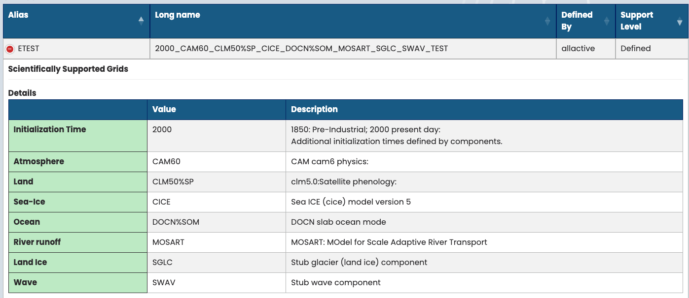
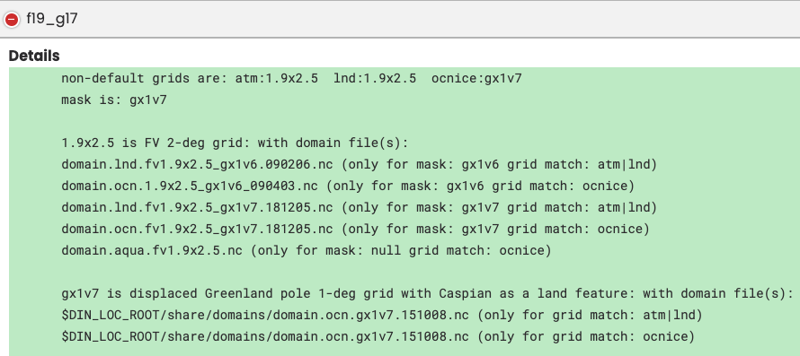
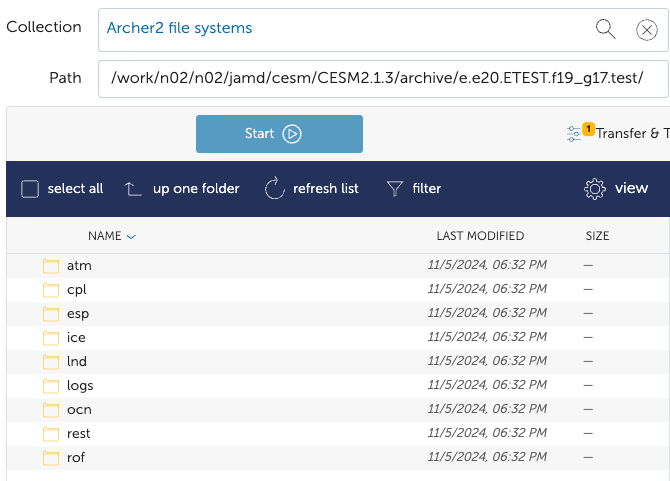
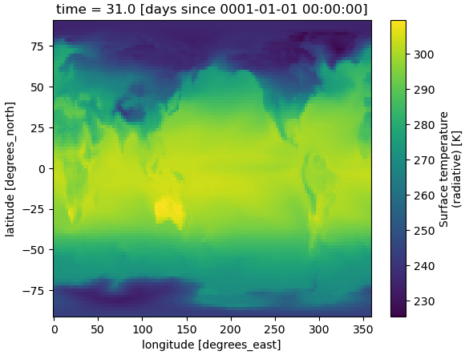

First Run
Here I go through a step by step example of running a slab ocean experiment, with present day initialization. I
use the ETEST compset with f19_g17
resolution.
Details of ETEST and f19_g17


Step 1 - Login
After logging in to ARCHER2, you should get a welcome message.
Terminal Output
Last login: Tue Nov 5 15:59:18 2024 from 2.98.194.178
#######################################################################################
@@@@@@@@@
@@@ @@@ _ ____ ____ _ _ _____ ____ ____
@@@ @@@@@ @@@ / \ | _ \ / ___| | | | | | ____| | _ \ |___ \
@@@ @@ @@ @@@ / _ \ | |_) | | | | |_| | | _| | |_) | __) |
@@ @@ @@@ @@ @@ / ___ \ | _ < | |___ | _ | | |___ | _ < / __/
@@ @@ @@@ @@ @@ /_/ \_\ |_| \_\ \____| |_| |_| |_____| |_| \_\ |_____|
@@@ @@ @@ @@@
@@@ @@@@@ @@@ https://www.archer2.ac.uk/support-access/
@@@ @@@
@@@@@@@@@
- U K R I - E P C C - H P E C r a y -
Hostname: ln02
Distribution: SLES 15.4 4
CPUS: 256
Memory: 515.3GB
Configured: 2024-07-04
######################################################################################
---------------------------------Welcome to ARCHER2-----------------------------------
######################################################################################
/usr/bin/manpath: can't set the locale; make sure $LC_* and $LANG are correct
Step 2 - Load modules
After successfully loading the modules, there are a few messages printed to terminal.
Terminal Output
jamd@ln02:~> module load cray-python
jamd@ln02:~> module load CESM2/2.1.3
Lmod is automatically replacing "cce/15.0.0" with "gcc/11.2.0".
Lmod is automatically replacing "PrgEnv-cray/8.3.3" with "PrgEnv-gnu/8.3.3".
Due to MODULEPATH changes, the following have been reloaded:
1) cray-mpich/8.1.23
After this, I make $CESM_ROOT the current directory:
jamd@ln02:~> cd $CESM_ROOT
jamd@ln02:/work/n02/n02/jamd/cesm/CESM2.1.3>
Step 3 - Create a case
To create the case with ETEST compset and f19_g17 resolution, I run:
jamd@ln02:/work/n02/n02/jamd/cesm/CESM2.1.3> $CIMEROOT/scripts/create_newcase --case $CESM_ROOT/runs/e.e20.ETEST.f19_g17.test --compset ETEST --res f19_g17 --project n02-GLOBALEX --run-unsupported
where I have used the case name of e.e20.ETEST.f19_g17.test following the
convection with the descriptive string test.
Terminal Output
Following this command, a bunch of stuff will be printed to terminal, the last of which should be:
Pes comments: none
Compset is: 2000_CAM60_CLM50%SP_CICE_DOCN%SOM_MOSART_SGLC_SWAV_TEST
Grid is: a%1.9x2.5_l%1.9x2.5_oi%gx1v7_r%r05_g%null_w%null_m%gx1v7
Components in compset are: ['cam', 'clm', 'cice', 'docn', 'mosart', 'sglc', 'swav', 'sesp', 'drv', 'dart']
No charge_account info available, using value from PROJECT
No project info available
cesm model version found: cesm2.1.3-rc.01
Batch_system_type is slurm
job is case.run USER_REQUESTED_WALLTIME None USER_REQUESTED_QUEUE None WALLTIME_FORMAT %H:%M:%S
job is case.st_archive USER_REQUESTED_WALLTIME None USER_REQUESTED_QUEUE None WALLTIME_FORMAT %H:%M:%S
Creating Case directory /work/n02/n02/jamd/cesm/CESM2.1.3/runs/e.e20.ETEST.f19_g17.test
Step 4 - Setup
Now the experiment has been created, we need to make $CESM_ROOT/runs/e.e20.ETEST.f19_g17.test the current directory,
before running case.setup:
jamd@ln02:/work/n02/n02/jamd/cesm/CESM2.1.3> cd $CESM_ROOT/runs/e.e20.ETEST.f19_g17.test
jamd@ln02:/work/n02/n02/jamd/cesm/CESM2.1.3/runs/e.e20.ETEST.f19_g17.test> ./case.setup
Terminal Output
jamd@ln02:/work/n02/n02/jamd/cesm/CESM2.1.3/runs/e.e20.ETEST.f19_g17.test> ./case.setup
Setting resource.RLIMIT_STACK to -1 from (8388608, -1)
/work/n02/n02/jamd/cesm/CESM2.1.3/runs/e.e20.ETEST.f19_g17.test/env_mach_specific.xml already exists, delete to replace
job is case.run USER_REQUESTED_WALLTIME None USER_REQUESTED_QUEUE None WALLTIME_FORMAT %H:%M:%S
Creating batch scripts
Writing case.run script from input template /mnt/lustre/a2fs-work2/work/n02/n02/jamd/cesm/CESM2.1.3/my_cesm_sandbox/cime/config/cesm/machines/template.case.run
Creating file .case.run
Writing case.st_archive script from input template /mnt/lustre/a2fs-work2/work/n02/n02/jamd/cesm/CESM2.1.3/my_cesm_sandbox/cime/config/cesm/machines/template.st_archive
Creating file case.st_archive
Creating user_nl_xxx files for components and cpl
If an old case build already exists, might want to run 'case.build --clean' before building
You can now run './preview_run' to get more info on how your case will be run
Step 5 - Customize namelists
For this example, we keep the default experiment parameters so don't need to change the namelist files.
Step 6 - Build
Now we build the executable:
jamd@ln02:/work/n02/n02/jamd/cesm/CESM2.1.3/runs/e.e20.ETEST.f19_g17.test> ./case.build
This step takes a while (about 5 minutes for this example), but should end with the following message:
Time spent not building: 6.407066 sec
Time spent building: 253.041738 sec
MODEL BUILD HAS FINISHED SUCCESSFULLY
Terminal Output
A lot is printed to terminal at this stage, the last of which is shown below.
Building atm with output to /work/n02/n02/jamd/cesm/CESM2.1.3/runs/e.e20.ETEST.f19_g17.test/bld/atm.bldlog.241105-175344
Building ice with output to /work/n02/n02/jamd/cesm/CESM2.1.3/runs/e.e20.ETEST.f19_g17.test/bld/ice.bldlog.241105-175344
Building ocn with output to /work/n02/n02/jamd/cesm/CESM2.1.3/runs/e.e20.ETEST.f19_g17.test/bld/ocn.bldlog.241105-175344
Building rof with output to /work/n02/n02/jamd/cesm/CESM2.1.3/runs/e.e20.ETEST.f19_g17.test/bld/rof.bldlog.241105-175344
Building glc with output to /work/n02/n02/jamd/cesm/CESM2.1.3/runs/e.e20.ETEST.f19_g17.test/bld/glc.bldlog.241105-175344
Building wav with output to /work/n02/n02/jamd/cesm/CESM2.1.3/runs/e.e20.ETEST.f19_g17.test/bld/wav.bldlog.241105-175344
Building esp with output to /work/n02/n02/jamd/cesm/CESM2.1.3/runs/e.e20.ETEST.f19_g17.test/bld/esp.bldlog.241105-175344
sesp built in 4.198223 seconds
sglc built in 4.202698 seconds
swav built in 4.218285 seconds
docn built in 5.041561 seconds
Component rof build complete with 4 warnings
mosart built in 10.101223 seconds
Component ice build complete with 10 warnings
cice built in 25.621810 seconds
Component atm build complete with 109 warnings
cam built in 101.564669 seconds
Building cesm with output to /work/n02/n02/jamd/cesm/CESM2.1.3/runs/e.e20.ETEST.f19_g17.test/bld/cesm.bldlog.241105-175344
Time spent not building: 6.407066 sec
Time spent building: 253.041738 sec
MODEL BUILD HAS FINISHED SUCCESSFULLY
Step 7 - Download Input data
The input data is downloaded with the command:
jamd@ln02:/work/n02/n02/jamd/cesm/CESM2.1.3/runs/e.e20.ETEST.f19_g17.test> ./check_input_data --download
Terminal Output
In this step, you will get a lot of messages of the form
Model missing file...Trying to download file...using WGET protocol...SUCCESS.
An few examples are given below:
Model cam missing file srf_emis_specifier for SOAG = '/work/n02/n02/jamd/cesm/CESM2.1.3/cesm_inputdata/atm/cam/chem/emis/CMIP6_emissions_2000climo/emissions-cmip6_SOAGx1.5_anthro_surface_2000climo_0.9x1.25_c20170608.nc'
Trying to download file: 'atm/cam/chem/emis/CMIP6_emissions_2000climo/emissions-cmip6_SOAGx1.5_anthro_surface_2000climo_0.9x1.25_c20170608.nc' to path '/work/n02/n02/jamd/cesm/CESM2.1.3/cesm_inputdata/atm/cam/chem/emis/CMIP6_emissions_2000climo/emissions-cmip6_SOAGx1.5_anthro_surface_2000climo_0.9x1.25_c20170608.nc' using WGET protocol.
SUCCESS
Model cam missing file srf_emis_specifier for SOAG = '/work/n02/n02/jamd/cesm/CESM2.1.3/cesm_inputdata/atm/cam/chem/emis/CMIP6_emissions_2000climo/emissions-cmip6_SOAGx1.5_bb_surface_2000climo_0.9x1.25_c20170322.nc'
Trying to download file: 'atm/cam/chem/emis/CMIP6_emissions_2000climo/emissions-cmip6_SOAGx1.5_bb_surface_2000climo_0.9x1.25_c20170322.nc' to path '/work/n02/n02/jamd/cesm/CESM2.1.3/cesm_inputdata/atm/cam/chem/emis/CMIP6_emissions_2000climo/emissions-cmip6_SOAGx1.5_bb_surface_2000climo_0.9x1.25_c20170322.nc' using WGET protocol.
SUCCESS
Model cam missing file srf_emis_specifier for SOAG = '/work/n02/n02/jamd/cesm/CESM2.1.3/cesm_inputdata/atm/cam/chem/emis/CMIP6_emissions_2000climo/emissions-cmip6_SOAGx1.5_biogenic_surface_2000climo_0.9x1.25_c20170322.nc'
Trying to download file: 'atm/cam/chem/emis/CMIP6_emissions_2000climo/emissions-cmip6_SOAGx1.5_biogenic_surface_2000climo_0.9x1.25_c20170322.nc' to path '/work/n02/n02/jamd/cesm/CESM2.1.3/cesm_inputdata/atm/cam/chem/emis/CMIP6_emissions_2000climo/emissions-cmip6_SOAGx1.5_biogenic_surface_2000climo_0.9x1.25_c20170322.nc' using WGET protocol.
SUCCESS
This stage will take a while if no input data already exists, on the order of 30 minutes for 1 degree resolution.
If the input data was downloaded successfully, running ./check_input_data should show the following:
jamd@ln02:/work/n02/n02/jamd/cesm/CESM2.1.3/runs/e.e20.ETEST.f19_g17.test> ./check_input_data
Setting resource.RLIMIT_STACK to -1 from (8388608, -1)
Loading input file list: 'Buildconf/cice.input_data_list'
Loading input file list: 'Buildconf/mosart.input_data_list'
Loading input file list: 'Buildconf/docn.input_data_list'
Loading input file list: 'Buildconf/cpl.input_data_list'
Loading input file list: 'Buildconf/clm.input_data_list'
Loading input file list: 'Buildconf/cam.input_data_list'
Step 8 - Run model
Before running the model, you need change
the duration of the simulation (default is 5 days),
and specify which partition to submit the job to (default is standard).
Here, I change it to 1 month on the short partition which has a max walltime of 20 minutes:
jamd@ln02:/work/n02/n02/jamd/cesm/CESM2.1.3/runs/e.e20.ETEST.f19_g17.test> ./xmlchange JOB_QUEUE=short
jamd@ln02:/work/n02/n02/jamd/cesm/CESM2.1.3/runs/e.e20.ETEST.f19_g17.test> ./xmlchange JOB_WALLCLOCK_TIME=20:00
jamd@ln02:/work/n02/n02/jamd/cesm/CESM2.1.3/runs/e.e20.ETEST.f19_g17.test> ./xmlchange STOP_N=1
jamd@ln02:/work/n02/n02/jamd/cesm/CESM2.1.3/runs/e.e20.ETEST.f19_g17.test> ./xmlchange STOP_OPTION=nmonths
Checking using xmlquery
After the above changes, you can use ./xmlquery -p JOB to check the JOB_QUEUE and JOB_WALLCLOCK_TIME have
changed:
jamd@ln02:/work/n02/n02/jamd/cesm/CESM2.1.3/runs/e.e20.ETEST.f19_g17.test> ./xmlquery -p JOB
Results in group case.run
JOB_QUEUE: short
JOB_WALLCLOCK_TIME: 20:00
Results in group case.st_archive
JOB_QUEUE: short
JOB_WALLCLOCK_TIME: 20:00
Results in group run_begin_stop_restart
JOB_IDS:
JOB_PRIORITY: regular
and ./xmlquery -p STOP to check STOP_N and STOP_OPTION:
jamd@ln02:/work/n02/n02/jamd/cesm/CESM2.1.3/runs/e.e20.ETEST.f19_g17.test> ./xmlquery -p STOP
Results in group run_begin_stop_restart
STOP_DATE: -999
STOP_N: 1
STOP_OPTION: nmonths
Now we can run the job:
jamd@ln02:/work/n02/n02/jamd/cesm/CESM2.1.3/runs/e.e20.ETEST.f19_g17.test> ./case.submit
If successful, you should get information printed to terminal about the job id:
Submitted job id is 7977850
Submitted job case.run with id 7977849
Submitted job case.st_archive with id 7977850
Terminal Output
The full terminal output is:
jamd@ln02:/work/n02/n02/jamd/cesm/CESM2.1.3/runs/e.e20.ETEST.f19_g17.test> ./case.submit
Setting resource.RLIMIT_STACK to -1 from (8388608, -1)
Creating component namelists
Calling /mnt/lustre/a2fs-work2/work/n02/n02/jamd/cesm/CESM2.1.3/my_cesm_sandbox/components/cam//cime_config/buildnml
CAM namelist copy: file1 /work/n02/n02/jamd/cesm/CESM2.1.3/runs/e.e20.ETEST.f19_g17.test/Buildconf/camconf/atm_in file2 /work/n02/n02/jamd/cesm/CESM2.1.3/runs/e.e20.ETEST.f19_g17.test/run/atm_in
Calling /mnt/lustre/a2fs-work2/work/n02/n02/jamd/cesm/CESM2.1.3/my_cesm_sandbox/components/clm//cime_config/buildnml
Calling /mnt/lustre/a2fs-work2/work/n02/n02/jamd/cesm/CESM2.1.3/my_cesm_sandbox/components/cice//cime_config/buildnml
Calling /mnt/lustre/a2fs-work2/work/n02/n02/jamd/cesm/CESM2.1.3/my_cesm_sandbox/cime/src/components/data_comps/docn/cime_config/buildnml
Calling /mnt/lustre/a2fs-work2/work/n02/n02/jamd/cesm/CESM2.1.3/my_cesm_sandbox/components/mosart//cime_config/buildnml
Calling /mnt/lustre/a2fs-work2/work/n02/n02/jamd/cesm/CESM2.1.3/my_cesm_sandbox/cime/src/components/stub_comps/sglc/cime_config/buildnml
Calling /mnt/lustre/a2fs-work2/work/n02/n02/jamd/cesm/CESM2.1.3/my_cesm_sandbox/cime/src/components/stub_comps/swav/cime_config/buildnml
Calling /mnt/lustre/a2fs-work2/work/n02/n02/jamd/cesm/CESM2.1.3/my_cesm_sandbox/cime/src/components/stub_comps/sesp/cime_config/buildnml
Calling /mnt/lustre/a2fs-work2/work/n02/n02/jamd/cesm/CESM2.1.3/my_cesm_sandbox/cime/src/drivers/mct/cime_config/buildnml
Finished creating component namelists
Checking that inputdata is available as part of case submission
Setting resource.RLIMIT_STACK to -1 from (-1, -1)
Loading input file list: 'Buildconf/cice.input_data_list'
Loading input file list: 'Buildconf/mosart.input_data_list'
Loading input file list: 'Buildconf/docn.input_data_list'
Loading input file list: 'Buildconf/cpl.input_data_list'
Loading input file list: 'Buildconf/clm.input_data_list'
Loading input file list: 'Buildconf/cam.input_data_list'
Check case OK
submit_jobs case.run
Submit job case.run
Submitting job script sbatch --time 20:00 -q short --account n02-GLOBALEX --export=ALL /mnt/lustre/a2fs-work2/work/n02/n02/jamd/cesm/CESM2.1.3/runs/e.e20.ETEST.f19_g17.test/.case.run --resubmit
Submitted job id is 7977849
Submit job case.st_archive
Submitting job script sbatch --time 20:00 -q short --account n02-GLOBALEX --export=ALL --dependency=afterok:7977849 /mnt/lustre/a2fs-work2/work/n02/n02/jamd/cesm/CESM2.1.3/runs/e.e20.ETEST.f19_g17.test/case.st_archive --resubmit
Submitted job id is 7977850
Submitted job case.run with id 7977849
Submitted job case.st_archive with id 7977850
The progress of the job can be monitored and managed with the usual slurm commands:
jamd@ln02:/work/n02/n02/jamd/cesm/CESM2.1.3/runs/e.e20.ETEST.f19_g17.test> squeue -u jamd
JOBID PARTITION NAME USER ST TIME NODES NODELIST(REASON)
7977850 standard st_archi jamd PD 0:00 1 (Dependency)
7977849 standard run.e.e2 jamd R 1:52 6 nid[006831,006833,006836,006844-006845,006849]
Model Output
The model output should be located in
$DOUT_S_ROOT = /work/n02/n02/jamd/cesm/CESM2.1.3/archive/e.e20.ETEST.f19_g17.test/ if successful with files
corresponding to each of the model components, as well as restart and
log files:

Timing
Timing information can be found at $CASEROOT/timing/cesm_timing.$CASE.$date. For this experiment,
the file is:
/work/n02/n02/jamd/cesm/CESM2.1.3/runs/e.e20.ETEST.f19_g17.test/timing/cesm_timing.e.e20.ETEST.f19_g17.test.7977849.241105-182147
Timing File
The timing file is quite long, the first section is shown below. The most useful information is in the Overall Metrics section.
---------------- TIMING PROFILE ---------------------
Case : e.e20.ETEST.f19_g17.test
LID : 7977849.241105-182147
Machine : archer2
Caseroot : /work/n02/n02/jamd/cesm/CESM2.1.3/runs/e.e20.ETEST.f19_g17.test
Timeroot : /work/n02/n02/jamd/cesm/CESM2.1.3/runs/e.e20.ETEST.f19_g17.test/Tools
User : jamd
Curr Date : Tue Nov 5 18:31:13 2024
grid : a%1.9x2.5_l%1.9x2.5_oi%gx1v7_r%r05_g%null_w%null_m%gx1v7
compset : 2000_CAM60_CLM50%SP_CICE_DOCN%SOM_MOSART_SGLC_SWAV_TEST
run_type : startup, continue_run = FALSE (inittype = TRUE)
stop_option : nmonths, stop_n = 1
run_length : 31 days (30.979166666666668 for ocean)
component comp_pes root_pe tasks x threads instances (stride)
--------- ------ ------- ------ ------ --------- ------
cpl = cpl 512 0 512 x 1 1 (1 )
atm = cam 512 0 512 x 1 1 (1 )
lnd = clm 256 0 256 x 1 1 (1 )
ice = cice 256 256 256 x 1 1 (1 )
ocn = docn 256 512 256 x 1 1 (1 )
rof = mosart 256 0 256 x 1 1 (1 )
glc = sglc 128 0 128 x 1 1 (1 )
wav = swav 128 0 128 x 1 1 (1 )
esp = sesp 1 0 1 x 1 1 (1 )
total pes active : 768
mpi tasks per node : 128
pe count for cost estimate : 768
Overall Metrics:
Model Cost: 798.38 pe-hrs/simulated_year
Model Throughput: 23.09 simulated_years/day
Init Time : 234.999 seconds
Run Time : 317.848 seconds 10.253 seconds/day
Final Time : 0.004 seconds
Actual Ocn Init Wait Time : 308.436 seconds
Estimated Ocn Init Run Time : 0.001 seconds
Estimated Run Time Correction : 0.000 seconds
(This correction has been applied to the ocean and total run times)
Log
The cpl.log file can be found at $CESM_ROOT/archive/$CASE/logs. For this example, the path is:
/work/n02/n02/jamd/cesm/CESM2.1.3/archive/e.e20.ETEST.f19_g17.test/logs/cpl.log.7977849.241105-182147
This should end with SUCCESSFUL TERMINATION OF CPL7-cesm. if the simulation ran correctly.
Log File
The file is very long, but the last SUCCESSFUL part is given below for this experiment:
(seq_mct_drv): =============== SUCCESSFUL TERMINATION OF CPL7-cesm ===============
(seq_mct_drv): =============== at YMD,TOD = 00010201 0 ===============
(seq_mct_drv): =============== # simulated days (this run) = 31.000 ===============
(seq_mct_drv): =============== compute time (hrs) = 0.088 ===============
(seq_mct_drv): =============== # simulated years / cmp-day = 23.087 ===============
(seq_mct_drv): =============== pes min memory highwater (MB) 890.039 ===============
(seq_mct_drv): =============== pes max memory highwater (MB) 7045.794 ===============
(seq_mct_drv): =============== pes min memory last usage (MB) 62.108 ===============
(seq_mct_drv): =============== pes max memory last usage (MB) 660.740 ===============
First Plot
After transferring the output data in $DOUT_S_ROOT to JASMIN, the load_dataset
function can be used to load the dataset, and
the print_ds_var_list function to find out
what variables are contained in the output data.
Below, I load the atmospheric dataset, find the temperature related variables in the Dataset and plot the surface temperature averaged over the first month.
import sys
sys.path.append('/home/users/jamd1/Isca/')
import isca_tools
# var_keep = ['TS', 'FSNT', 'FLNT', 'gw', 'LHFLX', 'SHFLX', 'FLNS', 'FSNS', 'PRECSC', 'PRECSL']
exp_name = 'e.e20.ETEST.f19_g17.test'
ds = isca_tools.cesm.load_dataset(exp_name, decode_times=False).load()
isca_tools.utils.print_ds_var_list(ds, 'temp')
ds.TS.plot()
RTPTHLP_CLUBB: Temp. Moist. Covariance
STEND_CLUBB: Temperature tendency
T: Temperature
THLP2_CLUBB: Temperature Variance
TREFHT: Reference height temperature
TS: Surface temperature (radiative)
TSMN: Minimum surface temperature over output period
TSMX: Maximum surface temperature over output period

Note that for this to work, the isca_tools directory
has the path /home/users/jamd1/Isca/isca_tools on JASMIN.